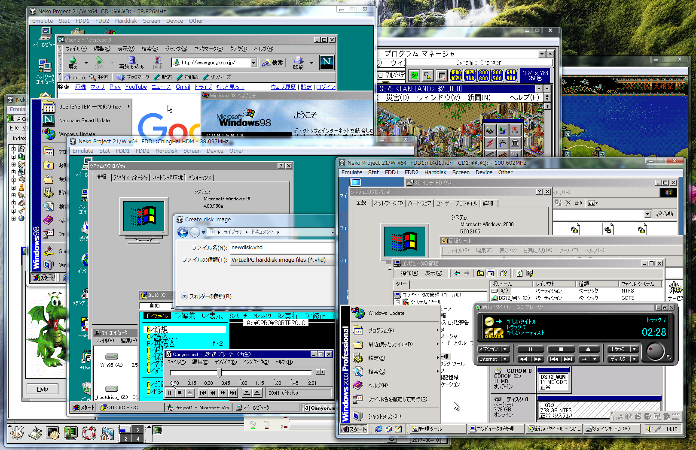

Neko Project 21/W（np21w, ねこープロジェクト21/W）はPC-98エミュレータ Neko Project IIおよびNeko Project 21（ねこープロジェクトII、ねこープロジェクト21）をベースに、ニッチなハードウェアのエミュレーションやPC-98後期モデル（1993～2000頃）の再現に耐えうる改造を施したものです。
本エミュレータの機能追加の多くは98らしさが失われていった後期モデル相当ですので、開発者の腕試し的な要素が強く、一般ユーザーにはあまり役に立たないニッチなものです。 立ち位置としては、PC-98用のゲームやソフトを動かすことよりも、PC-98アーキテクチャ自体に関心がある人へ向けたものになっています。
本家のNeko Project IIやNeko Project 21で動く物は基本的にそのまま動きますが、必ずしも本家より良くなるわけではありません。 PC-98前期～中期（1993頃迄）のエミュレーションは例えばNeko Project II fmgen版などをおすすめします。
【2026/10/04】 Neko Project 21/W ver0.86 rev106β3を公開しました。 ・BIOS I/O エミュレーションの不具合修正 ・Win3.1 DOS窓全画面の不具合が直るはずです 【2026/10/03】 Neko Project 21/W ver0.86 rev106β2を公開しました。 ・BIOS I/O エミュレーション修正 ・DOS窓系の不具合がかなり直っていると期待しています ・np2系でブート時にHDDがあるとHDD強制されてしまう不具合を修正 ・np2w 32bit版で高速メモリチェックを有効にするとメモリチェックで暴走する不具合を修正 【2026/09/27】 Neko Project 21/W ver0.86 rev106β1を公開しました。 ・NPDISPでDirect3D T&Lに対応（要ドライバ更新） ・ホストが頂点変換と照明を処理するので高速化できます ・エミュレータ側のNPDISP設定でT&Lを有効にしてください ・描画を省略して高速化するものも用意しました ・新たにWHPX版を用意しました ・Windows Hypervisor Platformの仮想化支援CPUを使います ・HAXMが使えない最近の環境でも使えるはずです ・互換性はHAXM版並なのでほぼWinNT系しかまともに動きません ・WinNT4のハードウェア構成調査がやたら遅いですが待てば進みます 【2026/09/27】 Neko Project 21/W ver0.86 rev105を公開しました。 ・FPU関連 ・FSCALE等の命令実装ミス修正 ・NaN判定が変だったのを修正 ・CD関連 ・CUEファイル読み込み修正 ・CloneCD形式のRead TOCを修正 ・EDC/ECCがおかしくなっていたのを修正 ・NPDISP関連（要ドライバ更新） ・DirectDrawオーバーレイ対応 ・DirectDrawでマニアックな転送に対応 ・反転回転系やROP3系が使えます ・アルファブレンドも実装しましたが実際は使用不可？ ・新フォント描画形式対応 ・ベジエ曲線描画のバグ修正 ・SCANLINE描画のバグ修正 ・無駄なメモリ読み込みをするバグを修正 ・ペンやブラシを誤って破棄するバグを修正 ・NPDISP Direct3D HAL対応 ・実際はソフトウェア描画なのであまり速くありません ・ドライバ更新が必要です ・動かないものは動きません ・本体側の設定で無効化できます ・その他 ・変換器を使うとテンキーの「,」や「=」が入力できない問題を対策 ・HOSTDRVNTでSFNの名前解決ができない場合があるバグを修正 ・シリアルポート通信関連のバグ修正 ・パラレルポート通信の不具合修正 ・フルスクリーンでマウスを動かすとフレーム落ちするバグを修正 （9/27 15時頃差し替え） ・ADPCMの不具合修正 【2026/08/23】 Neko Project 21/W ver0.86 rev104を公開しました。 ・CloneCD形式のCDイメージが読めなくなっていた問題を修正 ・GA-1280Aを移植実装 ・使う場合はWAB設定でEnableにする必要があります ・I/OポートがLGY-98と競合しますので無効化するかI/Oをずらしてください ・CPUのINS命令で例外が出るとI/Oポート二重入力になる問題を修正 ・CPU＆メモリをかなり高速化 ・ページング有効なときにキー入力を変なバッファに読み書きしてしまう問題を修正 ・HOSTDRVのWin9x版を実装 ・ロングファイルネームも使えます ・Win9xにドライバを入れる必要があります ・DOS版HOSTDRVの更新も必要です ・ハードウェア関連の音声出力先を変えられるようにしてみました ・Sound Option→Mapperタブです ・画面のデバイスロスト→復帰時にWAB画面が表示されない不具合修正 ・PEGCプレーンモードを修正 ・NVL.DLL無しで容量可変タイプVHDに対応 ・WaveStarを正式実装にした ・C-Bus PnPを実装 ・特殊フォーマットのNFD形式に対応 ・HOSTDRVのSFN変換を修正（ファイル・フォルダ名が変わる可能性があります） ・CPU周辺の修正 ・task_freeで例外にしない ・リミット判定ミス修正 ・送出する例外の種類ミス修正 ・CPUの16bit/32bitタスクスイッチバグ修正 ・OPL3タイマーのバグ修正 ・S98V3仕様のサウンドログ出力に対応（np2sより移植） ・メモリダンプの際レジスタもダンプするようにした ・エミュレーションサウンドBIOS追加 ・公開仕様に基づいてそれらしく鳴るようにしたものなので本物とは色々違います ・ソフトが非公開ワークエリアの内容に依存している場合は駄目です ・実機のものを提供した場合は従来通りそちらが使われます ・FPU例外周辺の修正 【2026/07/05】 Neko Project 21/W ver0.86 rev103を公開しました。 ・rev101以降画面描画でメモリ破壊していたバグを修正 ・CL-GD54xx（PC-9801-96等）がWinNT3.1およびWinNT3.5で動くように修正 ・自動選択は上手くいかないかもしれません ・HOSTDRVのファイル同時検索上限緩和 ・NVL.DLLが無いときのエラーメッセージを丁寧にした ・CPUのTrap Flag扱いの誤りを修正 ・CALL gate処理中に例外が起こるとCPU状態が中途半端になる不具合を修正 ・その他細かいCPUフラグチェックミス修正 ・FDCのステータスのミス修正 ・CPUスタックチェックでリミットの判定を間違える問題を修正 ・LEMM通常版のRELOADが正しく動きます ・CPUのVMEを追加実装 ・ADPCM修正およびCPU経由ADPCMを実装 ・サウンドボードにSNE MULTIMEDIA ORCHESTRAを追加 ・PCM部についてはADPCMを使うソフトがあるようなのでADPCMのみ暫定実装 ・FM部などその他はnp2sからの移植です ・ステートセーブ対応はまだ中途半端です ・BIOS I/Oエミュレーションのミスを修正 ・GLIOのバグ修正と追加実装 ・実機BIOSがなくてもそこそこ描画されます ・システムメニューからのフルメモリダンプに対応（I286SAVE=trueでデバッグメニュー有効時） 【2026/06/06】 Neko Project 21/W ver0.86 rev102を公開しました。 ・Neko Project 21/W専用Win3.1ディスプレイアダプタ修正 ・256色モードの画素取得時の色がおかしかった問題修正 ・ExTextOutでメモリ破壊する可能性がある不具合修正 ・更新のない部分は再描画しないようにした ・DirectDraw 256色モードのパレット取得でアクセス違反する問題を修正 ・DCI経由のVRAM直接アクセスに対応（要ドライバ更新＋ツール使用） ・GDI描画パフォーマンスを改善 ・ページフォールト時に誤描画するバグを修正 ・SB16のMIDIの挙動を修正 【2026/05/17】 Neko Project 21/W ver0.86 rev101を公開しました。 ・MS-DOS版シームレスマウスでカーソルがぶれる現象を起こりにくくした ・シームレスマウスにピクセル座標取得モードを追加 ・MS-DOS版シームレスマウスVer1.7と組み合わせるとWAB有効でも位置がずれなくなるはずです ・CDのトラック情報取得（READ TOC）の結果がおかしかったのを修正 ・CDチェックで蹴られるソフトが正常化するかも知れません ・WABなしで縦480pxを超える表示や80桁を超える表示に対応 ・30行BIOSの50行モードや90桁BIOSを使用できます ・80桁を超えの可否は設定でON/OFF出来ます ・90桁BIOSを使うときは90桁BIOSのオプションでマルチスキャンディスプレイモードにしてください ・Neko Project 21/W専用Win3.1ディスプレイアダプタを実装 ・様々な解像度や色数に設定できます ・別途配布しているnpdisp16がドライバです（最新版の使用を推奨） ・非推奨ですがWin9xでも使用できます ・MIDIの挙動を直しました ・一部ソフトの認識不良が直ると期待しています ・マウスホイール割り当てを変更出来るようにしました ・Device->Mouse->Mouse Wheel Actionから設定します ・音量・マウス速度・カーソルキー・ROLL UP/DOWNから選べます ・Direct3D排他モードオプションを復活 ・メニュー表示が出ないなどの問題があるので基本的に非推奨です ・テキストフック機能の改善 【2026/02/19】 Neko Project 21/W ver0.86 rev100を公開しました。 ・プリンタのオンライン状態を検出できるようにした ・ESC/Pエミュレーションで縦倍角指定が機能していなかったのを修正 ・印刷エミュレーションで上付と下付文字を実装 ・印刷エミュレーションで描画位置ずれを修正 ・逆改行印刷に対応した ・HOSTDRVで相対パスを正式にOKとした 【2026/02/07】 Neko Project 21/W ver0.86 rev99を公開しました。 ・パラレルポートによる印刷エミュレーション強化 ・実パラレルポート以外にファイルダンプ、名前付きパイプ、Windowsスプーラを選択できます ・Windowsスプーラの場合、RAW出力の他にPC-PR201またはESC/Pのエミュレーションが可能です ・PC-PR201エミュレーションの場合、印刷時には「左揃え」で「連続」や「シートフィーダ」にしてください（印字位置ずれ回避のため） ・Win2000でパラレルポートでの印刷ができない問題を修正 ・1.25MBフォーマットで77-79シリンダがあるベタFDイメージに対応 ・77-79シリンダがあるものはnp21/wでしか読めません（恐らく） ・元の77シリンダでトリミングするツールも用意しました（Neko Project 21/W ツール類として配布） ・ブートストラップローダでAH,ALレジスタの値を見るようにした ・SCSIステートセーブのバグ修正 ・エミュレーションIDE BIOSで異常なDA/UAが通ってしまう問題を修正 ・INT 1BhでDMAバンクを跨ぐ転送がエラーになっていなかったのを修正 ・rev96β3から実機IDE BIOSが使えなくなっていたのを修正 ・ただし使用は非推奨です ・実機IDE BIOS不使用時でもダミーのIDE BIOSを置くようにした ・ダミー（実質不使用）ですのでUMB用に潰しても大丈夫なはずです
本家から変更されている主要な部分は以下の通りです。